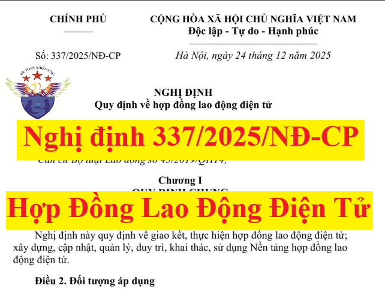

Ngày 24/12/2025, Chính phủ ban hành Nghị định 337/2025/NĐ-CP quy định về hợp đồng lao động điện tử, có hiệu lực thi hành từ ngày 1/1/2026.
Chậm nhất là ngày 1/7/2026, nền tảng hợp đồng lao động điện tử phải được chính thức đưa vào vận hành.
Việc giao kết, thực hiện hợp đồng lao động điện tử được thực hiện theo quy định tại Nghị định 337/2025/NĐ-CP từ ngày 1/7/2026.
Nội dung của Nghị định 337/2025/NĐ-CP như sau:
NGHỊ ĐỊNH
Căn cứ Luật Tổ chức Chính phủ số 63/2025/QH15;QUY ĐỊNH VỀ HỢP ĐỒNG LAO ĐỘNG ĐIỆN TỬ Căn cứ Bộ luật Lao động số 45/2019/QH14; Căn cứ Luật Giao dịch điện tử số 20/2023/QH15; Căn cứ Luật Căn cước số 26/2023/QH15; Căn cứ Luật Dữ liệu số 60/2024/QH15; Căn cứ Luật Công nghệ thông tin số 67/2006/QH11; Căn cứ Luật An toàn thông tin mạng số 86/2015/QH13; Căn cứ Luật Tiếp cận thông tin số 104/2016/QH13; Căn cứ Luật An ninh mạng số 24/2018/QH14; Căn cứ Luật Lưu trữ số 33/2024/QH15; Theo đề nghị của Bộ trưởng Bộ Nội vụ; Chính phủ ban hành Nghị định quy định về hợp đồng lao động điện tử. Chương I QUY ĐỊNH CHUNG Nghị định này quy định về giao kết, thực hiện hợp đồng lao động điện tử; xây dựng, cập nhật, quản lý, duy trì, khai thác, sử dụng Nền tảng hợp đồng lao động điện tử. Điều 2. Đối tượng áp dụng 1. Người lao động theo quy định tại khoản 1 Điều 3 Bộ luật Lao động giao kết, thực hiện hợp đồng lao động điện tử. 2. Người sử dụng lao động theo quy định tại khoản 2 Điều 3 Bộ luật Lao động giao kết, thực hiện hợp đồng lao động điện tử. 3. Cơ quan, tổ chức, cá nhân khác có liên quan đến việc thực hiện quy định tại Nghị định này. Điều 3. Giải thích từ ngữ Trong Nghị định này, các từ ngữ dưới đây được hiểu như sau: 1. Hợp đồng lao động điện tử là hợp đồng lao động được giao kết, thiết lập dưới dạng thông điệp dữ liệu theo quy định của pháp luật về lao động và pháp luật về giao dịch điện tử, có giá trị pháp lý như hợp đồng lao động bằng văn bản giấy. 2. Nền tảng hợp đồng lao động điện tử là hệ thống thông tin phục vụ giao dịch điện tử quy mô lớn theo quy định tại khoản 2 Điều 17 Nghị định số 137/2024/NĐ-CP ngày 23 tháng 10 năm 2024 của Chính phủ quy định về giao dịch điện tử của cơ quan nhà nước và hệ thống thông tin phục vụ giao dịch điện tử. Nền tảng hợp đồng lao động điện tử do Bộ Nội vụ xây dựng, vận hành, quản lý; có chức năng quản lý tập trung dữ liệu về hợp đồng lao động điện tử và cung cấp các dịch vụ dùng chung cho các cơ quan, tổ chức, doanh nghiệp, hợp tác xã, hộ gia đình và cá nhân trên phạm vi cả nước. 3. Hệ thống thông tin phục vụ giao dịch điện tử trong giao kết, thực hiện hợp đồng lao động điện tử (sau đây gọi là eContract) được liên kết với Nền tảng hợp đồng lao động điện tử cho phép người lao động và người sử dụng lao động tạo lập, ký số, lưu trữ, truy xuất, quản lý hợp đồng lao động điện tử, đồng thời thực hiện báo cáo tình hình sử dụng lao động, chứng thực hợp đồng lao động điện tử theo quy định tại Nghị định này. 4. Nhà cung cấp eContract là các tổ chức, doanh nghiệp có eContract được người sử dụng lao động và người lao động lựa chọn để giao kết, thực hiện hợp đồng lao động điện tử và chứng thực hợp đồng lao động điện tử theo quy định tại Nghị định này. 5. Mã định danh hợp đồng lao động điện tử (sau đây gọi là ID) là dãy số duy nhất được Nền tảng hợp đồng lao động điện tử cấp cho mỗi hợp đồng lao động điện tử và hợp đồng lao động điện tử được chuyển đổi từ hợp đồng lao động bằng văn bản giấy. 6. Chứng thực hợp đồng lao động điện tử là hoạt động do Nhà cung cấp eContract thực hiện thông qua dịch vụ chứng thực thông điệp dữ liệu theo quy định pháp luật về giao dịch điện tử. Nền tảng hợp đồng lao động điện tử chỉ thực hiện kiểm tra, đối soát và ghi nhận trạng thái hợp đồng lao động đã được chứng thực theo quy định. 7. Dịch vụ dữ liệu về hợp đồng lao động điện tử là dịch vụ cung cấp thông tin, dữ liệu được khai thác, phân tích, tổng hợp từ Nền tảng hợp đồng lao động điện tử cho các cơ quan, tổ chức, doanh nghiệp, cá nhân theo quy định pháp luật về dữ liệu. Dịch vụ dữ liệu được cung cấp thống nhất, tập trung tại Nền tảng hợp đồng lao động điện tử. 8. Xây dựng Nền tảng hợp đồng lao động điện tử là các hoạt động thiết lập, phát triển và hoàn thiện Nền tảng, được xác định từ thời điểm đề xuất chủ trương xây dựng đến thời điểm Nền tảng đã hình thành, đáp ứng yêu cầu kỹ thuật và đủ điều kiện đưa vào khai thác và sử dụng. 9. Cập nhật Nền tảng hợp đồng lao động điện tử là các hoạt động bảo đảm dữ liệu trong Nền tảng được phản ánh đầy đủ, kịp thời và chính xác theo thực tế phát sinh. 10. Duy trì Nền tảng hợp đồng lao động điện tử là các hoạt động bảo đảm Nền tảng đã xây dựng tồn tại, hoạt động liên tục và có chất lượng dữ liệu phù hợp theo đúng yêu cầu của cơ quan có thẩm quyền. 11. Khai thác, sử dụng Nền tảng hợp đồng lao động điện tử là các hoạt động truy cập, trích xuất, xử lý, sử dụng dữ liệu hợp đồng lao động và các ứng dụng của Nền tảng phục vụ mục đích cụ thể. 12. Kết nối với Nền tảng hợp đồng lao động điện tử là các hoạt động tạo sự liên kết giữa các hệ thống thông tin với Nền tảng nhằm trao đổi, truyền đưa dữ liệu. 13. Chia sẻ dữ liệu là các hoạt động chuyển dữ liệu, sao chép dữ liệu từ cơ quan, tổ chức, cá nhân quản lý dữ liệu tới cơ quan, tổ chức, cá nhân có nhu cầu khai thác, sử dụng. Chương II GIAO KẾT VÀ THỰC HIỆN HỢP ĐỒNG LAO ĐỘNG ĐIỆN TỬ 1. Việc giao kết và thực hiện hợp đồng lao động điện tử phải tuân thủ quy định của pháp luật về lao động, về giao dịch điện tử, về an toàn thông tin mạng, về dữ liệu, về bảo vệ dữ liệu cá nhân, về lưu trữ và quy định tại Nghị định này. 2. Hợp đồng lao động điện tử phải được gửi cho người lao động và người sử dụng lao động dưới hình thức thông điệp dữ liệu thông qua phương tiện điện tử phù hợp theo thỏa thuận của các bên. 3. Khuyến khích sử dụng hợp đồng lao động điện tử thay thế cho hợp đồng lao động bằng văn bản giấy trong quản trị nhân sự của người sử dụng lao động, trong giải quyết thủ tục hành chính liên quan đến hợp đồng lao động. Điều 5. Chủ thể tham gia hoạt động giao kết, thực hiện hợp đồng lao động điện tử Chủ thể tham gia hoạt động giao kết, thực hiện hợp đồng lao động điện tử bao gồm: 1. Người lao động và người sử dụng lao động có thẩm quyền giao kết hợp đồng lao động theo quy định tại Điều 18 Bộ luật Lao động. 2. Nhà cung cấp eContract bảo đảm điều kiện quy định tại khoản 3 Điều 6 Nghị định này. Điều 6. Điều kiện, phương thức thực hiện giao kết hợp đồng lao động điện tử 1. Việc giao kết hợp đồng lao động điện tử được thực hiện thông qua eContract bảo đảm các điều kiện sau: a) Có sử dụng phần mềm ký số, kiểm tra chữ ký số đáp ứng yêu cầu của pháp luật về giao dịch điện tử. b) Có biện pháp bảo mật để bảo đảm an toàn thông tin khách hàng và dữ liệu hợp đồng lao động điện tử; có phương án kỹ thuật bảo đảm duy trì và khắc phục hoạt động chứng thực hợp đồng điện tử khi có sự cố xảy ra. c) Có phương án lưu trữ, bảo đảm tính toàn vẹn dữ liệu của chứng từ điện tử; bảo đảm khả năng tra cứu hợp đồng lao động điện tử đã được giao kết trên eContract. d) Có chức năng bảo đảm được định danh đúng chủ thể và thực hiện xác thực danh tính theo quy định của pháp luật về định danh và xác thực điện tử người lao động và người sử dụng lao động. đ) Có biện pháp kỹ thuật để xác nhận việc tổ chức, cá nhân đã được định danh đồng ý với các nội dung trong hợp đồng lao động. e) Có chức năng chứng thực hợp đồng lao động điện tử theo quy định pháp luật về giao dịch điện tử để thực hiện chứng thực hợp đồng lao động điện tử trước khi gửi hợp đồng lao động điện tử về Nền tảng hợp đồng lao động điện tử để gắn ID. g) Có chức năng chuyển đổi hình thức giữa hợp đồng lao động điện tử và hợp đồng lao động bằng văn bản giấy theo quy định của pháp luật về giao dịch điện tử. h) Cung cấp tài khoản giao dịch điện tử tuân thủ các điều kiện quy định tại Điều 46 Luật Giao dịch điện tử. i) Có chức năng hỗ trợ người sử dụng lao động báo cáo tình hình sử dụng lao động theo quy định của pháp luật lao động thông qua giao thức và định dạng do Bộ Nội vụ quy định. k) Có chức năng tổng hợp, thống kê, báo cáo định kỳ hoặc đột xuất phục vụ quản lý giao dịch hợp đồng lao động điện tử. l) Kết nối qua giao diện lập trình ứng dụng tiêu chuẩn (API) với Nền tảng hợp đồng lao động điện tử theo quy định của Bộ Nội vụ. m) Bảo đảm các yêu cầu kỹ thuật về an toàn thông tin theo quy định về pháp luật an toàn thông tin mạng. 2. Người sử dụng lao động và người lao động phải bảo đảm các điều kiện sau: a) Đối với người lao động và người sử dụng lao động là cá nhân: giấy tờ tùy thân bao gồm thẻ căn cước công dân hoặc thẻ căn cước hoặc căn cước điện tử hoặc giấy chứng nhận căn cước hoặc tài khoản định danh điện tử mức độ 2 hoặc hộ chiếu còn thời hạn; thị thực nhập cảnh còn thời hạn hoặc giấy tờ chứng minh được miễn thị thực nhập cảnh (đối với cá nhân là người nước ngoài). b) Đối với người sử dụng lao động là doanh nghiệp, cơ quan, tổ chức, hợp tác xã, hộ gia đình: quyết định thành lập hoặc quyết định quy định về chức năng, nhiệm vụ, quyền hạn, cơ cấu tổ chức hoặc giấy chứng nhận đăng ký doanh nghiệp hoặc giấy chứng nhận đầu tư hoặc giấy chứng nhận đăng ký hộ kinh doanh và giấy tờ tùy thân của người đại diện theo pháp luật của doanh nghiệp, cơ quan, tổ chức, hợp tác xã, hộ gia đình, bao gồm: thẻ căn cước công dân hoặc thẻ căn cước hoặc giấy chứng nhận căn cước hoặc tài khoản định danh điện tử mức độ 2 hoặc hộ chiếu còn thời hạn; thị thực nhập cảnh còn thời hạn hoặc giấy tờ chứng minh được miễn thị thực nhập cảnh (đối với cá nhân là người nước ngoài). c) Có chữ ký số và sử dụng dịch vụ cấp dấu thời gian theo quy định của pháp luật về giao dịch điện tử. 3. Nhà cung cấp eContract phải bảo đảm các điều kiện sau: a) Có eContract đáp ứng điều kiện tại khoản 1 Điều này. b) Có giải pháp, công nghệ để thu thập, kiểm tra, đối chiếu, bảo đảm sự khớp đúng giữa thông tin nhận biết tổ chức, cá nhân, dữ liệu sinh trắc học người đại diện theo pháp luật của tổ chức, cá nhân (là các yếu tố, đặc điểm sinh học gắn liền với người đại diện theo pháp luật của tổ chức, cá nhân thực hiện định danh, khó làm giả, có tỷ lệ trùng nhau thấp như vân tay, khuôn mặt, mống mắt, giọng nói và các yếu tố sinh trắc học khác) với các thông tin, yếu tố sinh trắc học tương ứng trên giấy tờ tùy thân của người đại diện theo pháp luật của tổ chức, cá nhân quy định tại khoản 2 Điều này và bảo đảm được định danh đúng chủ thể và thực hiện xác thực danh tính theo quy định của pháp luật về định danh và xác thực điện tử. c) Có Giấy phép kinh doanh dịch vụ tin cậy có loại dịch vụ được phép kinh doanh là cung cấp dịch vụ chứng thực thông điệp dữ liệu theo pháp luật giao dịch điện tử. 4. Hợp đồng lao động điện tử được tạo lập, xác thực định danh chủ thể giao kết hợp đồng lao động điện tử, ký số, dấu thời gian gắn kèm chữ ký số của các chủ thể giao kết và chứng thực thông điệp dữ liệu của Nhà cung cấp eContract vào hợp đồng lao động điện tử trên eContract bảo đảm các điều kiện theo quy định tại khoản 1 Điều này. Trong vòng 24 giờ kể từ thời điểm bên sau cùng ký, Nhà cung cấp eContract phải gửi hợp đồng lao động điện tử về Nền tảng hợp đồng lao động điện tử để gắn ID theo quy định của Bộ Nội vụ. Điều 7. Hiệu lực của hợp đồng lao động điện tử Hợp đồng lao động điện tử có hiệu lực kể từ thời điểm bên sau cùng ký số, dấu thời gian gắn kèm chữ ký số của các chủ thể tham gia giao kết và chứng thực thông điệp dữ liệu của Nhà cung cấp eContract vào hợp đồng lao động điện tử, trừ trường hợp các bên có thỏa thuận khác. Điều 8. Chuyển đổi hình thức giữa hợp đồng lao động bằng văn bản giấy và hợp đồng lao động điện tử 1. Hợp đồng lao động điện tử được chuyển đổi từ hợp đồng lao động bằng văn bản giấy thực hiện theo quy định tại khoản 1 Điều 12 Luật Giao dịch điện tử và đáp ứng các yêu cầu sau: a) Chủ thể giao kết hợp đồng lao động bằng văn bản phải được xác thực theo quy định của pháp luật về định danh và xác thực điện tử. b) Hợp đồng lao động điện tử được chuyển đổi phải được ký số bởi người có thẩm quyền của người sử dụng lao động để xác nhận tính chính xác, đầy đủ so với bản gốc và chịu trách nhiệm trước pháp luật về nội dung chuyển đổi. Hợp đồng lao động điện tử sau khi chuyển đổi phải được gắn ID. 2. Hợp đồng lao động bằng văn bản giấy được chuyển đổi từ hợp đồng lao động điện tử thực hiện theo quy định tại khoản 2 Điều 12 Luật Giao dịch điện tử. 3. Hợp đồng lao động được chuyển đổi có giá trị như bản gốc khi đáp ứng đủ các điều kiện theo quy định của pháp luật về giao dịch điện tử. Điều 9. Sửa đổi, bổ sung, tạm hoãn, chấm dứt hợp đồng lao động điện tử 1. Trường hợp hợp đồng lao động đã được giao kết thông qua phương tiện điện tử thì việc sửa đổi, bổ sung, tạm hoãn, chấm dứt hợp đồng lao động điện tử được thực hiện như đối với việc giao kết hợp đồng lao động điện tử theo quy định tại các Điều 5, 6 và 7 Nghị định này, trừ trường hợp các bên có thỏa thuận khác. 2. Trường hợp hợp đồng lao động được giao kết bằng văn bản giấy thì việc sửa đổi, bổ sung, tạm hoãn, chấm dứt hợp đồng lao động thông qua hình thức thông điệp dữ liệu được thực hiện theo trình tự như sau: a) Thực hiện chuyển đổi sang hợp đồng lao động điện tử theo quy định tại khoản 1 Điều 8 Nghị định này. b) Sửa đổi, bổ sung, tạm hoãn, chấm dứt hợp đồng lao động điện tử sau khi chuyển đổi được thực hiện như quy định tại khoản 1 Điều này. 3. Phụ lục hợp đồng lao động, thỏa thuận tạm hoãn và thông báo chấm dứt của hợp đồng lao động điện tử hoặc của hợp đồng lao động điện tử được chuyển đổi phải được gắn cùng ID của hợp đồng lao động đó nhằm bảo đảm tính thống nhất, toàn vẹn và khả năng truy xuất lịch sử giao dịch của các bên liên quan. Chương III XÂY DỰNG, CẬP NHẬT, DUY TRÌ, KHAI THÁC VÀ SỬ DỤNG NỀN TẢNG HỢP ĐỒNG LAO ĐỘNG ĐIỆN TỬ 1. Nền tảng hợp đồng lao động điện tử được xây dựng, quản lý, vận hành tập trung; được khai thác và sử dụng thống nhất từ trung ương đến địa phương. 2. Nền tảng hợp đồng lao động điện tử được duy trì hoạt động liên tục, ổn định, thông suốt đáp ứng yêu cầu quản lý giao kết, thực hiện hợp đồng lao động điện tử; yêu cầu khai thác và sử dụng của các cơ quan, tổ chức, cá nhân theo quy định pháp luật. 3. Thông tin, dữ liệu về hợp đồng lao động điện tử được lưu trữ an toàn, bảo mật, bảo đảm tính toàn vẹn và tuân thủ các quy định của pháp luật về an toàn thông tin mạng, về dữ liệu và về bảo vệ dữ liệu cá nhân. 4. Việc xây dựng, cập nhật, duy trì, khai thác và sử dụng Nền tảng hợp đồng lao động điện tử tuân thủ theo quy định của pháp luật có liên quan, phù hợp với Khung kiến trúc tổng thể quốc gia số. Điều 11. Xây dựng Nền tảng hợp đồng lao động điện tử Xây dựng Nền tảng hợp đồng lao động điện tử bao gồm các hoạt động sau: 1. Thiết kế kiến trúc của Nền tảng hợp đồng lao động điện tử phù hợp với Khung kiến trúc tổng thể quốc gia số. 2. Thiết lập hệ thống thông tin để lưu trữ, quản lý việc cập nhật, duy trì, khai thác dữ liệu hợp đồng lao động điện tử bao gồm hạ tầng kỹ thuật, phần cứng, phần mềm, ứng dụng thông qua việc đầu tư mới hoặc thuê dịch vụ hoặc sử dụng hệ thống thông tin sẵn có hoặc hợp tác công tư theo quy định tại pháp luật về đầu tư công, về đầu tư theo phương thức đối tác công tư, về ngân sách nhà nước, về đấu thầu và pháp luật có liên quan. 3. Thu thập, chuẩn hóa, tạo lập, cung cấp dịch vụ về dữ liệu hợp đồng lao động điện tử. 4. Các hoạt động khác theo quy định của pháp luật. Điều 12. Tài khoản trên Nền tảng hợp đồng lao động điện tử Tài khoản trên Nền tảng hợp đồng lao động điện tử do Bộ Nội vụ cấp và được quản lý, sử dụng theo quy định pháp luật về giao dịch điện tử. Điều 13. Hạ tầng kỹ thuật Nền tảng hợp đồng lao động điện tử 1. Hạ tầng kỹ thuật Nền tảng hợp đồng lao động điện tử bao gồm: hệ thống máy chủ, máy trạm, các trang thiết bị bảo đảm kết nối mạng, thiết bị bảo đảm an toàn, an ninh mạng, thiết bị mã hóa, thiết bị lưu trữ, hệ thống đường truyền kết nối Internet và các thiết bị khác. 2. Hạ tầng kỹ thuật Nền tảng hợp đồng lao động điện tử được lưu trữ, vận hành trên cơ sở hạ tầng của Trung tâm Dữ liệu quốc gia. Điều 14. Thu thập, cập nhập, quản lý dữ liệu trên Nền tảng hợp đồng lao động điện tử 1. Dữ liệu được thu thập, cập nhật, quản lý trên Nền tảng hợp đồng lao động điện tử bao gồm: a) Hợp đồng lao động điện tử, phụ lục hợp đồng lao động điện tử và các văn bản điện tử khác liên quan bảo đảm đáp ứng đầy đủ điều kiện, phương thức thực hiện giao kết, sửa đổi, bổ sung, chấm dứt hợp đồng lao động điện tử theo quy định tại Điều 6, Điều 9 Nghị định này. b) Hợp đồng lao động điện tử được chuyển đổi từ hợp đồng lao động bằng văn bản giấy theo quy định tại khoản 1 Điều 8 Nghị định này. c) Thông tin về nội dung chủ yếu của hợp đồng lao động theo quy định pháp luật lao động. d) Thông tin về tình hình sử dụng lao động của doanh nghiệp, cơ quan, tổ chức, hợp tác xã, hộ gia đình, cá nhân. đ) Thông tin về nhật ký giao dịch hợp đồng lao động điện tử, bao gồm thông tin truy cập, lịch sử thao tác, chuỗi sự kiện giao dịch, thông điệp dữ liệu, thời điểm xác thực, ID, cùng các dữ liệu kỹ thuật (metadata) phát sinh trong quá trình khởi tạo, giao kết, sửa đổi, bổ sung, tạm hoãn, chấm dứt và lưu trữ hợp đồng lao động điện tử. e) Thông tin khác phục vụ công tác quản lý nhà nước về lao động theo quy định của pháp luật. 2. Nguồn thu thập, cập nhật dữ liệu vào Nền tảng hợp đồng lao động điện tử a) Nhà cung cấp eContract gửi, đồng bộ tự động theo chuẩn kỹ thuật đối với dữ liệu quy định tại các điểm a, b, đ và e khoản 1 Điều này. b) Người sử dụng lao động cập nhật trực tiếp dữ liệu quy định tại điểm c, điểm e khoản 1 Điều này thông qua tài khoản được cấp trên Nền tảng hợp đồng lao động điện tử. c) Sở Nội vụ các tỉnh, thành phố trực thuộc trung ương cập nhật trực tiếp dữ liệu theo quy định tại điểm d, điểm e khoản 1 Điều này thông qua tài khoản được cấp trên Nền tảng hợp đồng lao động điện tử. d) Các cơ sở dữ liệu quốc gia, cơ sở dữ liệu chuyên ngành chia sẻ dữ liệu phục vụ đối chiếu, xác thực thông tin hợp đồng lao động điện tử. đ) Nguồn khác theo quy định của pháp luật về dữ liệu. 3. Bộ Nội vụ phối hợp với cơ quan, tổ chức, cá nhân có liên quan ban hành danh mục dữ liệu chủ, danh mục dữ liệu mở, danh mục dữ liệu dùng chung trong Nền tảng hợp đồng lao động điện tử theo quy định pháp luật dữ liệu. 4. Dữ liệu về hợp đồng lao động điện tử được quản lý, lưu trữ theo quy định pháp luật lưu trữ và pháp luật dữ liệu. Điều 15. Dịch vụ dữ liệu về hợp đồng lao động điện tử cung cấp trên Nền tảng hợp đồng lao động điện tử 1. Dịch vụ chia sẻ dữ liệu phục vụ mục đích giải quyết thủ tục hành chính liên quan đến hợp đồng lao động của các cơ quan nhà nước. 2. Dịch vụ đồng bộ dữ liệu với dữ liệu chủ của Nền tảng hợp đồng lao động điện tử phục vụ mục đích chuẩn hóa, thống nhất dữ liệu giữa các cơ sở dữ liệu, hệ thống thông tin liên quan trong cơ quan nhà nước. 3. Dịch vụ tổng hợp, thống kê, phân tích, báo cáo dữ liệu về hợp đồng lao động điện tử hỗ trợ quản lý, chỉ đạo, điều hành của cấp có thẩm quyền; cải cách hành chính, nâng cao năng lực quản trị công. 4. Dịch vụ cung cấp dữ liệu hợp đồng lao động điện tử cho người dân, doanh nghiệp để phát triển kinh tế số, xã hội số. Điều 16. Kết nối, chia sẻ dữ liệu với Nền tảng hợp đồng lao động điện tử 1. Cơ sở dữ liệu quốc gia, cơ sở dữ liệu chuyên ngành, Trung tâm Dữ liệu quốc gia, cổng dịch vụ công, hệ thống thông tin giải quyết thủ tục hành chính, nền tảng tích hợp, chia sẻ dữ liệu cấp bộ, cấp tỉnh và hệ thống thông tin khác của cơ quan nhà nước, cơ sở dữ liệu khác kết nối với Nền tảng hợp đồng lao động điện tử thông qua mạng viễn thông, mạng Internet, mạng máy tính, hệ thống thông tin theo quy định pháp luật về kết nối và chia sẻ dữ liệu, dữ liệu mở phục vụ giao dịch điện tử của cơ quan nhà nước. 2. Để bảo đảm bảo mật, an ninh, an toàn thông tin, bảo vệ dữ liệu cá nhân khi kết nối, chia sẻ thông tin với Nền tảng hợp đồng lao động điện tử, hệ thống thông tin của cơ quan nhà nước, tổ chức phải bảo đảm các yêu cầu sau: a) Đáp ứng tiêu chuẩn, quy chuẩn kỹ thuật công nghệ thông tin trong kết nối, chia sẻ với Nền tảng hợp đồng lao động điện tử. b) Bảo đảm an toàn thông tin tối thiểu cấp độ 3 theo quy định của pháp luật về bảo đảm an toàn hệ thống thông tin theo cấp độ khi kết nối chính thức. 3. Việc kết nối, chia sẻ dữ liệu theo quy định tại khoản 1 Điều này được thực hiện trên cơ sở thống nhất bằng văn bản giữa Bộ Nội vụ và cơ quan, tổ chức chủ quản cơ sở dữ liệu, hệ thống thông tin. 4. Bộ Nội vụ có trách nhiệm thông báo bằng văn bản việc từ chối hoặc tạm ngừng kết nối, chia sẻ dữ liệu trong Nền tảng hợp đồng lao động điện tử trong các trường hợp sau: a) Hệ thống thông tin của cơ quan, tổ chức đề nghị kết nối không bảo đảm điều kiện quy định tại khoản 2 Điều này. b) Cơ quan, tổ chức được kết nối có hoạt động truy cập trái phép, làm thay đổi, xóa, hủy, phát tán thông tin trong Nền tảng hợp đồng lao động điện tử. c) Cơ quan, tổ chức được kết nối vi phạm quy định về bảo vệ dữ liệu cá nhân hoặc nội dung đã thống nhất với Bộ Nội vụ quy định tại khoản 3 Điều này. Điều 17. Chủ thể khai thác và sử dụng dữ liệu, dịch vụ trong Nền tảng hợp đồng lao động điện tử 1. Bộ Nội vụ khai thác, sử dụng dữ liệu, dịch vụ trong Nền tảng hợp đồng lao động điện tử phục vụ công tác quản lý nhà nước về giao dịch hợp đồng lao động điện tử theo quy định tại khoản 2 Điều 49 và khoản 3 Điều 50 Luật Giao dịch điện tử; thống kê, tổng hợp phục vụ công tác lãnh đạo, chỉ đạo, điều hành của các cấp có thẩm quyền và công tác hoạch định kế hoạch, chính sách về việc làm, lao động, quan hệ lao động, tiền lương và bảo hiểm xã hội. 2. Cơ quan nhà nước, tổ chức chính trị, tổ chức chính trị - xã hội khai thác dữ liệu, sử dụng dịch vụ trong Nền tảng hợp đồng lao động điện tử để phục vụ công tác quản lý nhà nước theo chức năng, nhiệm vụ, quyền hạn được giao. 3. Cơ quan, tổ chức và cá nhân được phép khai thác và sử dụng dữ liệu của mình; dữ liệu cá nhân của người khác nếu được người đó đồng ý theo quy định của pháp luật. Điều 18. Cách thức khai thác, sử dụng dữ liệu trong Nền tảng hợp đồng lao động điện tử Cơ quan, tổ chức, doanh nghiệp, cá nhân khai thác, sử dụng dữ liệu trong Nền tảng hợp đồng lao động điện tử theo các cách thức sau: 1. Thông qua dịch vụ dữ liệu về hợp đồng lao động điện tử cung cấp trên Nền tảng hợp đồng lao động điện tử. 2. Thông qua kết nối, chia sẻ dữ liệu giữa Nền tảng hợp đồng lao động điện tử với các cơ sở dữ liệu quốc gia, cơ sở dữ liệu, hệ thống thông tin liên quan khác. 3. Thông qua văn bản yêu cầu cung cấp dữ liệu: a) Cơ quan, tổ chức, doanh nghiệp, cá nhân có văn bản yêu cầu cung cấp dữ liệu trong Nền tảng hợp đồng lao động điện tử gửi về Bộ Nội vụ. b) Văn bản yêu cầu cung cấp dữ liệu phải nêu rõ mục đích, phạm vi dữ liệu cần cung cấp trong Nền tảng hợp đồng lao động điện tử và cam kết chịu trách nhiệm sử dụng dữ liệu được cung cấp đúng mục đích. c) Trong thời hạn 07 ngày làm việc kể từ ngày nhận được văn bản yêu cầu, căn cứ quy định của pháp luật, Bộ Nội vụ xem xét, quyết định việc cho phép khai thác, cung cấp dữ liệu theo quy định. d) Trường hợp đồng ý cho phép khai thác dữ liệu thì có văn bản trả lời và cung cấp dữ liệu cho cơ quan, tổ chức, doanh nghiệp, cá nhân. Trường hợp không đồng ý cho phép khai thác dữ liệu thì phải có văn bản trả lời và nêu rõ lý do. Chương IV TỔ CHỨC THỰC HIỆN 1. Người sử dụng lao động có các quyền sau đây: a) Đăng ký và sử dụng tài khoản truy cập Nền tảng hợp đồng lao động điện tử để tra cứu, xác minh và quản lý dữ liệu hợp đồng lao động điện tử của mình đã giao kết. b) Sử dụng eContract để khai trình lao động và báo cáo tình hình sử dụng lao động theo quy định tại Điều 4 Nghị định số 145/2020/NĐ-CP ngày 14 tháng 12 năm 2020 của Chính phủ quy định chi tiết và hướng dẫn thi hành một số điều của Bộ luật Lao động về điều kiện lao động và quan hệ lao động. c) Chia sẻ, sử dụng dữ liệu hợp đồng lao động điện tử của mình từ Nền tảng hợp đồng lao động điện tử để báo cáo về tình hình sử dụng lao động, thực hiện các thủ tục hành chính, giao dịch điện tử có liên quan theo quy định pháp luật. 2. Người sử dụng lao động có trách nhiệm sau đây: a) Thực hiện việc giao kết, sửa đổi, bổ sung, tạm hoãn và chấm dứt hợp đồng lao động điện tử theo quy định tại Nghị định này. b) Lưu trữ và bảo mật dữ liệu hợp đồng lao động điện tử, bảo đảm tính toàn vẹn và khả năng truy xuất khi cần thiết. c) Phối hợp với Nhà cung cấp eContract và cơ quan quản lý nhà nước trong việc kiểm tra, xác minh thông tin và giải quyết các vấn đề phát sinh liên quan đến hợp đồng lao động điện tử. d) Tổ chức hướng dẫn, đào tạo, cung cấp các phương tiện, điều kiện để hỗ trợ người lao động giao kết, thực hiện hợp đồng lao động điện tử; sử dụng, truy cập hợp đồng lao động điện tử trên Nền tảng hợp đồng lao động điện tử. đ) Thông báo ngay cho cơ quan quản lý Nền tảng hợp đồng lao động điện tử khi phát hiện có dấu hiệu rủi ro về bảo mật, giả mạo, sai lệch thông tin hoặc truy cập trái phép. e) Tuân thủ quy định pháp luật về bảo vệ bí mật nhà nước, bảo vệ dữ liệu cá nhân và quy chế hoạt động của Nền tảng hợp đồng lao động điện tử trong quá trình khai thác, sử dụng dữ liệu hợp đồng lao động điện tử. Điều 20. Quyền và trách nhiệm của người lao động 1. Người lao động có các quyền sau đây: a) Đăng ký và sử dụng tài khoản truy cập Nền tảng hợp đồng lao động điện tử để tra cứu, xác minh và quản lý dữ liệu hợp đồng lao động điện tử của mình đã giao kết. b) Chia sẻ, sử dụng dữ liệu hợp đồng lao động điện tử của mình từ Nền tảng hợp đồng lao động điện tử để thực hiện các thủ tục hành chính, giao dịch điện tử có liên quan theo quy định pháp luật. 2. Người lao động có trách nhiệm sau đây: a) Thực hiện việc giao kết, sửa đổi, bổ sung, tạm hoãn và chấm dứt hợp đồng lao động điện tử theo quy định tại Nghị định này. b) Bảo mật thông tin tài khoản truy cập và không chia sẻ cho người khác sử dụng trái phép. c) Cập nhật đầy đủ, chính xác thông tin cá nhân theo hướng dẫn khi đăng ký tài khoản trên Nền tảng hợp đồng lao động điện tử. d) Thông báo ngay cho cơ quan quản lý Nền tảng hợp đồng lao động điện tử khi phát hiện có dấu hiệu rủi ro về bảo mật, giả mạo, sai lệch thông tin hoặc truy cập trái phép. đ) Tuân thủ quy định pháp luật về bảo vệ bí mật nhà nước, bảo vệ dữ liệu cá nhân và quy chế hoạt động của Nền tảng hợp đồng lao động điện tử trong quá trình khai thác, sử dụng dữ liệu hợp đồng lao động điện tử. Điều 21. Trách nhiệm của Nhà cung cấp eContract 1. Gửi bản hợp đồng lao động điện tử có gắn ID cho người lao động và người sử dụng lao động dưới hình thức thông điệp dữ liệu thông qua phương tiện điện tử phù hợp theo thỏa thuận cung cấp dịch vụ. 2. Thiết lập kênh kết nối kỹ thuật ổn định, an toàn với Nền tảng hợp đồng lao động điện tử, bảo đảm khả năng truyền nhận dữ liệu chính xác, kịp thời và bảo mật. 3. Công khai thông báo phương thức hoạt động, chất lượng dịch vụ trên trang thông tin điện tử chính thức của Nhà cung cấp eContract, bao gồm: quy trình đăng ký sử dụng dịch vụ, biểu mẫu, chi phí liên quan và các điều kiện cung cấp dịch vụ. 4. Bảo đảm kết nối liên tục, bảo mật, toàn vẹn dữ liệu hợp đồng lao động điện tử; các điều kiện cần thiết để thực hiện giao kết hợp đồng lao động điện tử và thực hiện các giao dịch theo yêu cầu của các bên có liên quan trong việc giao kết, thực hiện hợp đồng lao động điện tử. 5. Cung cấp công cụ để người sử dụng lao động số hóa, chuyển đổi hình thức giữa hợp đồng lao động bằng văn bản giấy và hợp đồng lao động điện tử; công cụ báo cáo tình hình sử dụng lao động theo quy định pháp luật. 6. Thực hiện đầy đủ chế độ báo cáo về triển khai hoạt động cung cấp eContract; về tình hình giao dịch hợp đồng lao động điện tử trên eContract theo quy định của Bộ Nội vụ. 7. Thực hiện lưu trữ dữ liệu hợp đồng lao động điện tử theo quy định pháp luật về lưu trữ. 8. Xây dựng và duy trì phương án kỹ thuật, tổ chức, nhân sự và quy trình nghiệp vụ để thực hiện việc chứng thực hợp đồng lao động điện tử. 9. Trường hợp Nhà cung cấp eContract chấm dứt hoạt động thì toàn bộ dữ liệu hợp đồng lao động điện tử phải được chuyển giao cho Nền tảng hợp đồng lao động điện tử theo hướng dẫn của Bộ Nội vụ. Điều 22. Trách nhiệm của Bộ Nội vụ 1. Chủ trì, phối hợp với các cơ quan có liên quan tổ chức triển khai, hướng dẫn, kiểm tra, đôn đốc thực hiện quy định tại Nghị định này. 2. Chủ trì, phối hợp với Tổng Liên đoàn Lao động Việt Nam và cơ quan liên quan triển khai xây dựng, cập nhật, duy trì, khai thác và sử dụng Nền tảng hợp đồng lao động điện tử theo quy định pháp luật. 3. Xây dựng, ban hành Mô hình kiến trúc và Quy chế hoạt động của Nền tảng hợp đồng lao động điện tử. 4. Xây dựng, rà soát, cập nhật, ban hành hướng dẫn về chức năng, tính năng kỹ thuật của Nền tảng hợp đồng lao động điện tử; về việc cấp, quản lý ID; về chế độ báo cáo phục vụ quản lý nhà nước về giao dịch hợp đồng lao động điện tử. 5. Chủ trì, phối hợp với Bộ Khoa học và Công nghệ hướng dẫn về kết nối, chia sẻ, cập nhật, khai thác, sử dụng dữ liệu, dịch vụ cung cấp trên Nền tảng hợp đồng lao động điện tử; về tiêu chuẩn, quy chuẩn kỹ thuật công nghệ thông tin kết nối, chia sẻ dữ liệu giữa Nền tảng hợp đồng lao động điện tử với cơ sở dữ liệu quốc gia, cơ sở dữ liệu chuyên ngành, cổng dịch vụ công, hệ thống thông tin giải quyết thủ tục hành chính, eContract. 6. Công bố danh sách Nhà cung cấp eContract đủ điều kiện kết nối với Nền tảng hợp đồng lao động điện tử. Điều 23. Trách nhiệm của Bộ Công an 1. Cung cấp hạ tầng tại Trung tâm Dữ liệu quốc gia đáp ứng nhu cầu xây dựng, vận hành Nền tảng hợp đồng lao động điện tử. 2. Phối hợp với Bộ Nội vụ ban hành danh mục dữ liệu chủ, danh mục dữ liệu mở, danh mục dữ liệu dùng chung trong Nền tảng hợp đồng lao động điện tử. 3. Phối hợp với Bộ Nội vụ trong việc lựa chọn phương thức thực hiện, xác định chi phí bảo đảm cho hoạt động xây dựng, cập nhật, quản lý, duy trì, khai thác, sử dụng Nền tảng hợp đồng lao động điện tử. Điều 24. Trách nhiệm của Bộ Tài chính Phối hợp với Bộ Nội vụ bảo đảm kinh phí cho hoạt động xây dựng, cập nhật, quản lý, duy trì, khai thác, sử dụng Nền tảng hợp đồng lao động điện tử theo quy định tại pháp luật về đầu tư công, đầu tư theo phương thức đối tác công tư, ngân sách nhà nước, đấu thầu và pháp luật có liên quan. Điều 25. Trách nhiệm của Bộ Khoa học và Công nghệ 1. Phối hợp với Bộ Nội vụ xây dựng hướng dẫn thực hiện các hoạt động quản trị chia sẻ, khai thác dữ liệu, tiêu chuẩn, quy chuẩn kỹ thuật công nghệ thông tin kết nối, chia sẻ thông tin giữa Nền tảng hợp đồng lao động điện tử với cơ sở dữ liệu quốc gia khác, cơ sở dữ liệu chuyên ngành, cổng dịch vụ công, hệ thống thông tin giải quyết thủ tục hành chính. 2. Phối hợp với Bộ Nội vụ trong việc lựa chọn phương thức thực hiện, xác định chi phí bảo đảm cho hoạt động xây dựng, cập nhật, quản lý, duy trì, khai thác, sử dụng Nền tảng hợp đồng lao động điện tử. Điều 26. Trách nhiệm của các bộ, cơ quan ngang bộ, cơ quan thuộc Chính phủ 1. Kết nối, chia sẻ dữ liệu của cơ sở dữ liệu quốc gia, cơ sở dữ chuyên ngành thuộc phạm vi quản lý với Nền tảng hợp đồng lao động điện tử. 2. Rà soát, điều chỉnh các quy định, thủ tục hành chính thuộc phạm vi quản lý để sử dụng dữ liệu hợp đồng lao động điện tử từ Nền tảng hợp đồng lao động điện tử theo quy định tại Nghị định này và các quy định pháp luật có liên quan. 3. Tuân thủ quy định pháp luật về bảo vệ bí mật nhà nước, bảo vệ dữ liệu cá nhân và quy chế hoạt động của Nền tảng hợp đồng lao động điện tử trong quá trình khai thác, sử dụng dữ liệu hợp đồng lao động điện tử. Điều 27. Trách nhiệm của Ủy ban nhân dân các tỉnh, thành phố trực thuộc trung ương 1. Kết nối, chia sẻ dữ liệu thuộc phạm vi quản lý với Nền tảng hợp đồng lao động điện tử. 2. Rà soát, điều chỉnh các quy định, thủ tục hành chính thuộc phạm vi chức năng, nhiệm vụ để sử dụng dữ liệu hợp đồng lao động điện tử từ Nền tảng hợp đồng lao động điện tử phục vụ khai thác, sử dụng theo quy định tại Nghị định này và các quy định pháp luật có liên quan. 3. Tuân thủ quy định pháp luật về bảo vệ bí mật nhà nước, bảo vệ dữ liệu cá nhân và quy chế hoạt động của Nền tảng hợp đồng lao động điện tử trong quá trình khai thác, sử dụng dữ liệu hợp đồng lao động điện tử. 4. Chỉ đạo Sở Nội vụ thực hiện các nhiệm vụ sau: a) Tuyên truyền, phổ biến quy định về hợp đồng lao động điện tử cho người sử dụng lao động, người lao động và các cơ quan, tổ chức có liên quan trên địa bàn. b) Hướng dẫn, kiểm tra, giám sát việc thực hiện quy định về hợp đồng lao động điện tử trên địa bàn. c) Cung cấp thông tin, cập nhật báo cáo tình hình sử dụng lao động của người sử dụng lao động trên địa bàn và các báo cáo khác theo quy định của pháp luật lao động và hướng dẫn của Bộ Nội vụ. Chương V ĐIỀU KHOẢN THI HÀNH 1. Nghị định này có hiệu lực thi hành từ ngày 01 tháng 01 năm 2026. Chậm nhất là ngày 01 tháng 7 năm 2026, Nền tảng hợp đồng lao động điện tử phải được chính thức đưa vào vận hành. Việc giao kết, thực hiện hợp đồng lao động điện tử được thực hiện theo quy định tại Nghị định này từ ngày 01 tháng 7 năm 2026. 2. Trường hợp các văn bản quy phạm pháp luật được viện dẫn trong Nghị định này được sửa đổi, bổ sung hoặc thay thế thì thực hiện theo văn bản mới ban hành. Điều 29. Quy định chuyển tiếp 1. Hợp đồng lao động điện tử được giao kết trước ngày Nghị định này có hiệu lực thi hành và đến ngày Nghị định này có hiệu lực thi hành vẫn còn hiệu lực thì được tiếp tục thực hiện theo quy định của pháp luật lao động và pháp luật giao dịch điện tử đến hết thời hạn của hợp đồng lao động điện tử và có giá trị tương đương hợp đồng lao động điện tử đáp ứng theo điều kiện, phương thức theo quy định của Nghị định này. 2. Hợp đồng lao động điện tử được xác lập trước ngày Nghị định này có hiệu lực thi hành và đến ngày Nghị định này có hiệu lực thi hành chưa thực hiện xong thì được tiếp tục thực hiện theo quy định của pháp luật lao động và pháp luật giao dịch điện tử, trừ trường hợp các bên thỏa thuận áp dụng quy định của Nghị định này. 3. Trường hợp Nhà cung cấp eContract sử dụng chữ ký số trong giao dịch cùng với các bên tham gia giao dịch trên eContract, Nhà cung cấp eContract có trách nhiệm rà soát, nâng cấp hệ thống thông tin, phần mềm ứng dụng để tích hợp phần mềm ký số, phần mềm kiểm tra chữ ký số đáp ứng quy định tại Nghị định này và pháp luật khác có liên quan. Điều 30. Trách nhiệm thi hành 1. Bộ trưởng Bộ Nội vụ hướng dẫn, theo dõi, đôn đốc, kiểm tra việc thực hiện Nghị định này; định kỳ hằng năm hoặc đột xuất báo cáo Chính phủ, Thủ tướng Chính phủ. 2. Bộ trưởng, Thủ trưởng cơ quan ngang bộ, Thủ trưởng cơ quan thuộc Chính phủ, Chủ tịch Ủy ban nhân dân các cấp và các cơ quan, tổ chức, cá nhân có liên quan chịu trách nhiệm thi hành Nghị định này.
|
